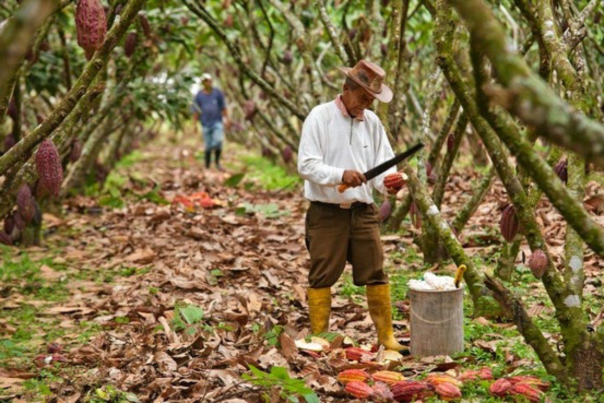
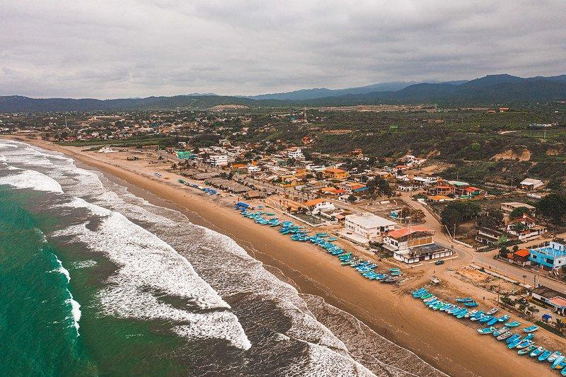
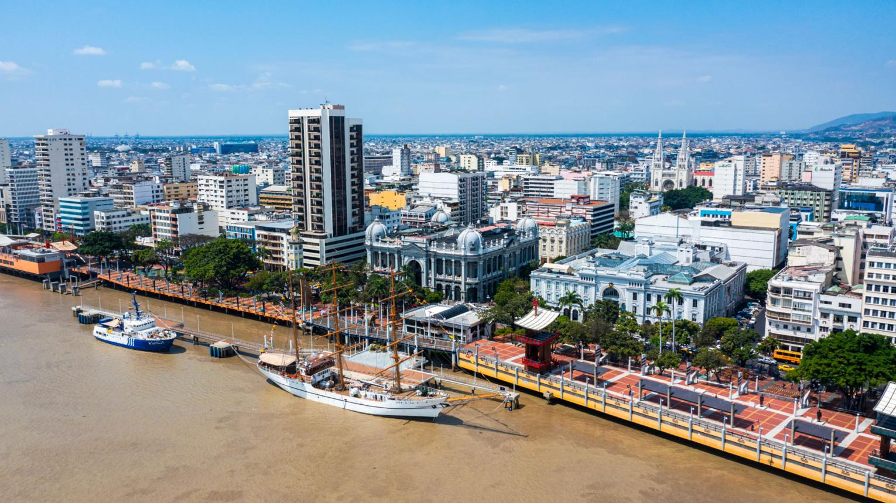
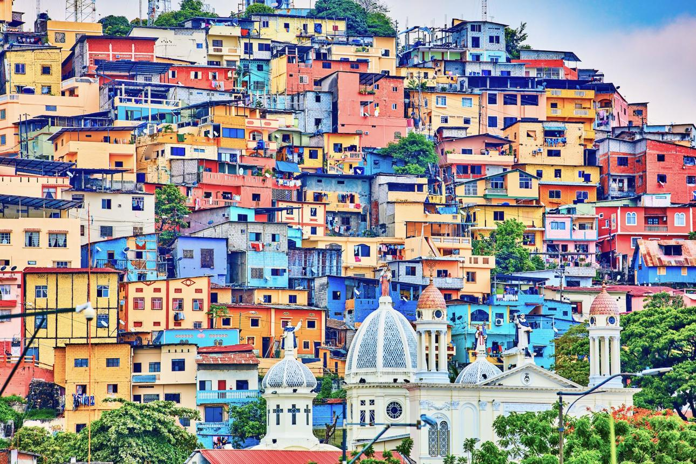
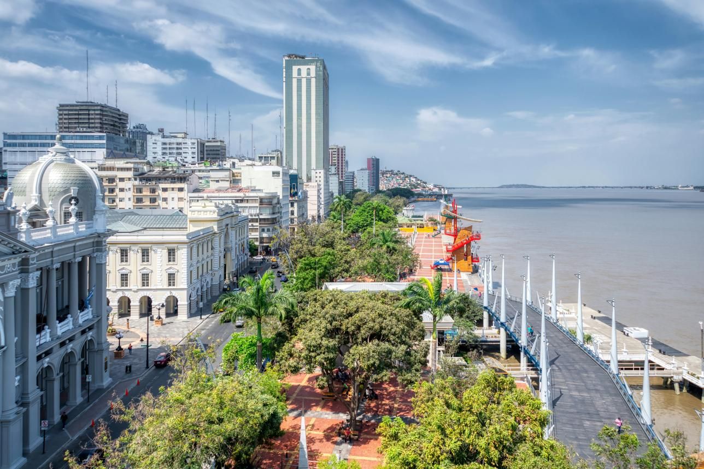

Entre os Andes
e o Pacífico.
A Costa, também conhecida como região Litoral, está localizada na parte oeste do Equador, entre a Cordilheira dos Andes e o Oceano Pacífico. É uma região formada principalmente por planícies, praias, rios, manguezais e áreas de vegetação tropical.
O clima é geralmente quente e varia de acordo com a localização e a época do ano. Suas terras férteis possuem grande importância para a agricultura equatoriana, com destaque para produtos como banana, cacau, arroz e cana-de-açúcar. A pesca também é uma atividade importante devido à ligação da região com o Oceano Pacífico.
Uma região ligada
à terra e ao mar.


As planícies e os vales da Costa possuem terras férteis e favorecem importantes atividades agrícolas. A região se destaca pela produção de banana, cacau, arroz, cana-de-açúcar e outros produtos.
A proximidade com o Oceano Pacífico também torna a pesca uma atividade importante. Agricultura, pesca, comércio e atividades portuárias fazem da Costa uma região de grande importância para a economia equatoriana.
A maior cidade
do Equador.
Localizada na região da Costa, Guayaquil é a cidade mais populosa do Equador e um dos principais centros econômicos e comerciais do país.
Sua localização próxima ao rio Guayas e sua atividade portuária contribuíram para que a cidade se tornasse um importante ponto de circulação de mercadorias e ligação do Equador com o comércio internacional.


